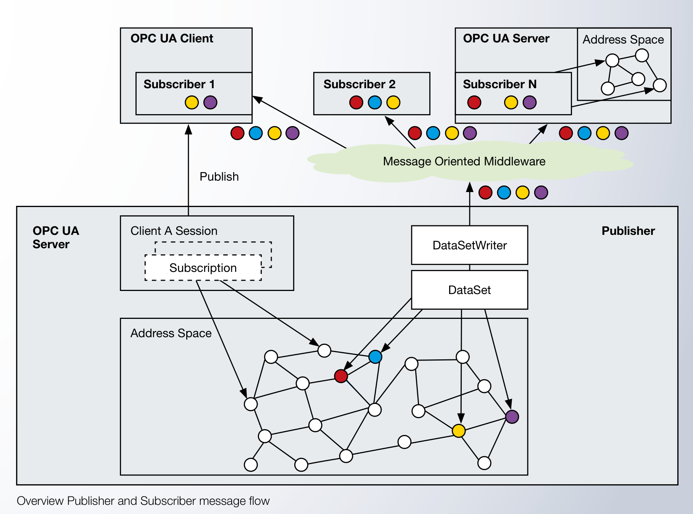

PubSub & MQTT
Pattern ที่สอง — Publisher-Subscriber — ออกแบบมาเพื่อ "ส่งข้อมูลให้หลายคนรู้พร้อมกัน" โดยที่ผู้ส่งและผู้รับไม่ต้องรู้จักกัน เพิ่มเข้ามาในมาตรฐาน OPC UA Part 14 ปี 2018 และเป็นกลไกหลักที่ใช้ขึ้น Cloud ในปัจจุบัน
ทำไมต้องมี PubSub ในเมื่อมี Client-Server แล้ว?
Client-Server เก่ง — แต่ ไม่ได้ออกแบบมาสำหรับสถานการณ์เหล่านี้:
PubSub Message Flow

คำศัพท์สำคัญ
| คำ | ความหมาย |
|---|---|
| Publisher | ส่งข้อมูล (โดยทั่วไปคือ OPC UA Server) |
| Subscriber | รับข้อมูล (โดยทั่วไปคือ OPC UA Client หรือ Cloud Application) |
| MOM (Message Oriented Middleware) | คนกลาง — รับจาก Publisher แล้วแจกให้ Subscriber (เช่น MQTT Broker, AMQP Broker, Network Multicast) |
| DataSet | ชุดของ Variable/Event ที่ Publisher ส่งออกพร้อมกัน (เช่น "PLC State" = สถานะของ 50 Variable) |
| DataSetWriter | ฝั่ง Publisher — รวบรวม DataSet แล้วส่งผ่าน Network |
| DataSetReader | ฝั่ง Subscriber — รับข้อมูลแล้วใส่กลับเข้าใน Address Space ของตัวเอง |
| WriterGroup / ReaderGroup | กลุ่มของ Writer/Reader ที่ใช้ Configuration คล้ายกัน (Publishing Interval, Encoding, Transport) |
Transport Protocols — ส่งผ่านอะไรได้บ้าง
OPC UA PubSub ออกแบบให้ใช้ Network Protocol ที่เหมาะกับแต่ละสถานการณ์:
เทียบกับ Client-Server แบบสรุป
| ประเด็น | Client-Server | PubSub |
|---|---|---|
| Connection | Persistent — Client เปิด Session ค้าง | Connectionless — ส่งแล้วลืม |
| Coupling | Client รู้จัก Server โดยตรง | Decoupled — ผ่าน Broker / Multicast |
| Scalability | หลาย Client ต่อ 1 Server | หลาย Publisher → หลาย Subscriber |
| Direction | Bi-directional (Read + Write) | Uni-directional (Publish → Subscribe) |
| Browse? | มี — Client ค้นหาเองได้ | ไม่มี — ต้อง Configure ล่วงหน้า |
| Use Case | HMI / SCADA / Engineering Tool | IoT Telemetry · Cloud · Real-time Field |
| Security | SecureChannel + Session | Message-level Security (Sign + Encrypt) |
ตัวอย่าง — ส่งข้อมูล Sensor ไป MQTT Broker
มาดูภาพการใช้งานจริงแบบง่ายๆ:
Publisher — Edge Gateway
Linux + open62541
- อ่านค่าจาก PLC ทุก 1 วินาที
- รวมเป็น DataSet "FactoryFloor"
- Publish ผ่าน MQTT
MQTT Broker
Mosquitto on Cloud
- Topic:
opcua/factory-a/sensors - QoS 1
Dashboard
Grafana
ML Service
Anomaly detection
MES
Production tracking
JSON Encoding — IT-friendly
OPC UA PubSub ผ่าน MQTT รองรับ JSON เป็น Encoding ทำให้ Subscriber ฝั่ง IT (Python, Node.js, .NET) ทำงานได้ทันทีโดยไม่ต้องใช้ OPC UA SDK เต็ม:
// MQTT message ที่ Publisher ส่ง (JSON Encoding)
{
"MessageId": "msg-12345",
"MessageType": "ua-data",
"PublisherId": "factory-a-gw01",
"DataSetWriterId": 1,
"Timestamp": "2026-05-19T14:32:17.123Z",
"Payload": {
"TempXmitter1.CurrentValue": {
"Type": "Double",
"Value": 23.5
},
"TempXmitter2.CurrentValue": {
"Type": "Double",
"Value": 76.2
},
"Motor.Status": {
"Type": "String",
"Value": "Running"
}
}
}
Subscriber ฝั่ง Python ใช้แค่ paho-mqtt + json.loads() ก็พอ —
ไม่ต้องใช้ asyncua library ใหญ่
Security ใน PubSub
เพราะ PubSub ไม่มี Connection — Security ทำที่ ระดับ Message:
- Publisher Sign + Encrypt ข้อความก่อนส่ง
- Subscriber Verify Signature + Decrypt เมื่อรับ
- ใช้ Shared Symmetric Key (จัดการผ่าน Security Key Service)
- Key หมุนเวียนเป็นระยะ (Key Rotation)
นี่คือ End-to-End Encryption — Broker เห็นแค่ข้อความเข้ารหัส แอบดูข้างในไม่ได้
เมื่อไหร่เลือก PubSub vs Client-Server?
| สถานการณ์ | เลือก… |
|---|---|
| HMI ในโรงงาน ดู/ควบคุม PLC | Client-Server (ต้อง Write ด้วย) |
| Engineering Tool ตั้งค่า Device | Client-Server (Browse, Method, Configure) |
| ส่งข้อมูลขึ้น Cloud Dashboard | PubSub over MQTT |
| Sensor → ML Model + Dashboard + MES | PubSub (Many Subscribers) |
| Motion Controller → Drive (Hard Real-time) | PubSub over UDP/TSN |
| Cross-company Data Spaces (Catena-X) | PubSub (Loose Coupling) |
| Read Historical Data | Client-Server (HistoryRead Service) |
สรุปบทที่ 05
- PubSub เพิ่มเข้ามาใน OPC UA Part 14 ปี 2018 — ตอบโจทย์ One-to-Many และ Cloud
- คำสำคัญ: Publisher, Subscriber, MOM, DataSet, DataSetWriter/Reader, WriterGroup/ReaderGroup
- Transport: MQTT (Cloud หลัก), AMQP (Enterprise), UDP (Field), Kafka (Stream)
- JSON Encoding ทำให้ IT/Cloud Subscriber ใช้ Library ปกติได้ — ไม่ต้องใช้ OPC UA SDK เต็ม
- Security ระดับ Message — End-to-End Encryption — Broker เห็นแต่ Ciphertext
- ใช้คู่กับ Client-Server ในระบบเดียวกันได้ — เลือก Pattern ตาม Audience ของข้อมูล
บทต่อไปจะดู Security — เรื่องสำคัญที่ Modbus ไม่มีและทำให้ OPC UA ใช้กับโรงงาน IT-connected ได้